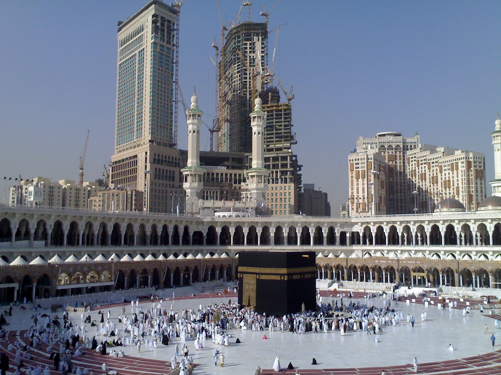
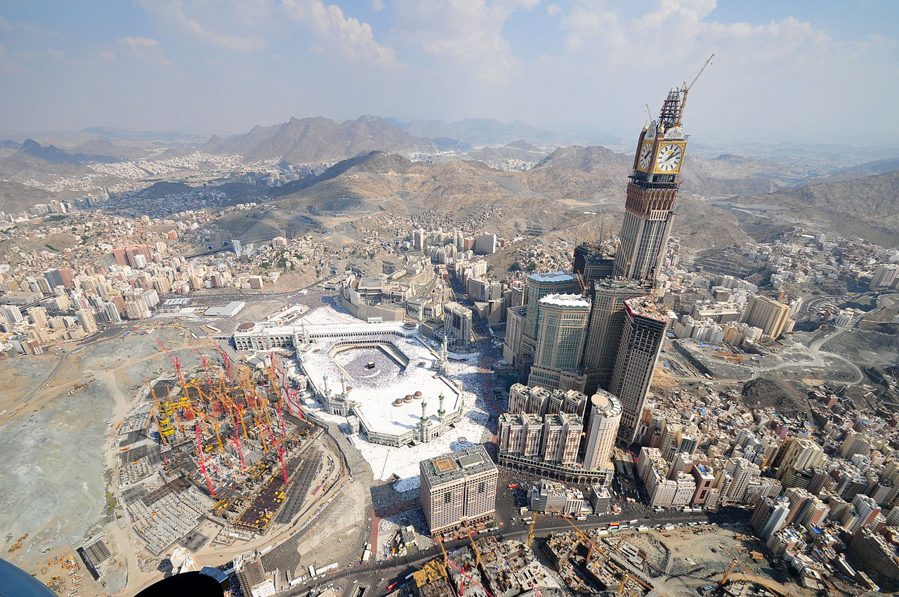

Abradż al-Bajt
kompleks hotelowy w Mekce, w Arabii Saudyjskiej, postmodernistyczny, wzniesiony w latach 2004–2011 według projektu zespołu architektów biura architektonicznego SL Rasch; znajduje się w bezpośrednim sąsiedztwie Świętego Meczetu.

W czasie budowy na tle Świętego Meczetu
Abradż al-Bajt znajduje się w pobliżu największego na świecie meczetu i najświętszego miejsca islamu, Al-Masdżid al-Haram.
Widziany z lotu ptaka
Kompleks posiada kilka światowych rekordów, w tym najwyższy hotel na świecie, najwyższy zegar wieżowy na świecie, największa na świecie tarcza zegara[1], i największy na świecie budynek pod względem powierzchni.
